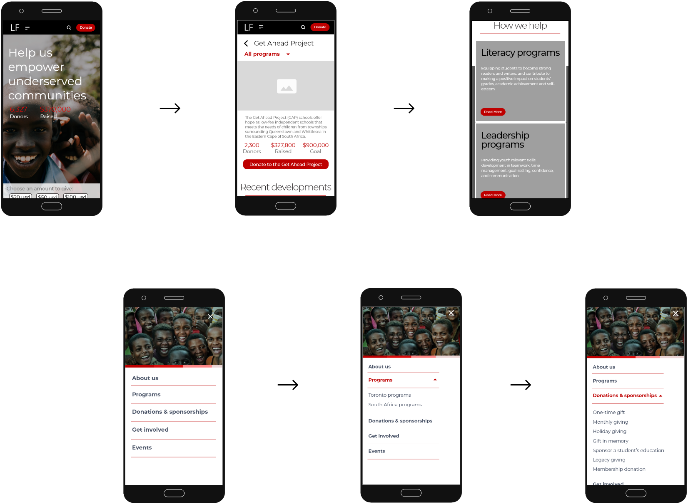

Leacock Foundation
Distinguishing itself from all the other charities by its mission and cause they work for we chose Leacock foundation by helping them excel digitally.

Distinguishing itself from all the other charities by its mission and cause they work for we chose Leacock foundation by helping them excel digitally.
The project was assigned to our group in the month of May 2020 with a timeline of a fortnight. We all were well aware of our strengths and promptly prioritized our tasks, while creating a project brief explaining each team members role. Working as an Interaction designer. Along side with my team members Ally and Mikella I was also responsible for user research, interaction design, proto-typing and user testing.
For re-designing a charity foundation as a team we had to understand what intrigues users to choose certain foundation and incline their loyalty through a digital source.


Without being able to meet our participants personally , we reached out to past participants to gain insights on their motivations, needs and frustrations to help re-design mobile app

Primary research uncovered that users are looking for ease of use, to feel being a part of the community with greater transparency, and reveal this would be considering getting involved with a not for profit organization. Summarizing as every user has a different way of interacting with a particular organization. Some individuals use a straight forward way to be involved some would prefer to feel further indulged in the organizations causes and see through the process. This helped our team to march forward into creating a persona and journey.

We believe that offering a platform that’s simple to use, connects closely with its users and transparent with its operations would better attract interested individuals who are keen on helping out with the cause by increasing trust and engagement levels with users

Before starting up on our design process we studied the user flow and app and websites architecture to absorb the gaps in its existing content. Our new flow and site map categorized and labelled content based on what users expected and created a simplistic navigation.

Our first Mid-fidelity proto-type created on Adobe XD based on our user insights. Through which we conducted user testing and gain further clarity for our designs.
Introducing the new and improved mobile and web-based application that assists donors at its very best. Keeping the insights we gained from our testings new interface provides greater transparency, keeping users tied to their communities with a simplistic design pattern which provides recognition rather than recall. The new design keeps its esthetics intact while embracing new trends of time.